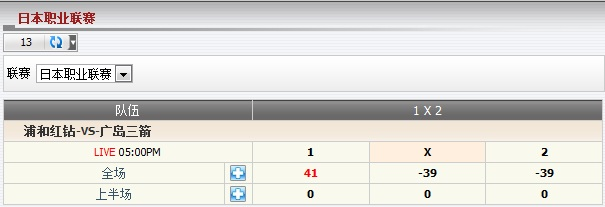

1 x 2
总代理根据1x2之投注类型在每场赛事的输赢预测 (图1.1)。

图 1.1
在这个例子中, 会员投注于赛事 浦和红钻 -vs- 广岛三箭, 投注额 = 130, 赔率 = 2.06, 总代理占成 = 30%, 投注类型 = 1x2, 会员选择: 全场.1是指主队 (浦和红钻) 完场后会赢。
- 如果全场结果是客队赢或和局那么会员会输
--> 总代理会赢: 投注额 * 总代理占成 * 1 = 130 * 30% * 1 = 39
- 如果全场结果是主队赢那么会员会赢
--> 总代理会输: 投注额 * 总代理占成 * (赔率 - 1) = 130 * 30% * (2.06 - 1) = 41